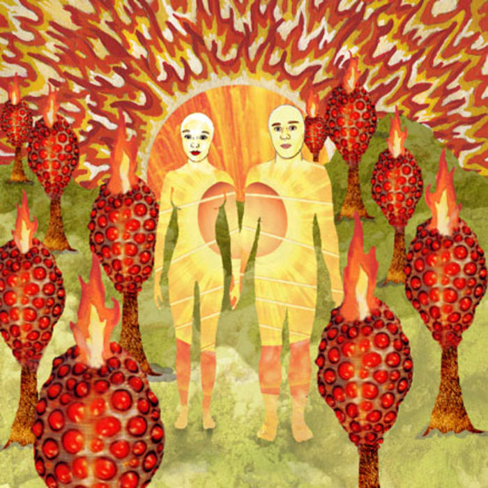

The Sunlandic Twins (2005)
Track Listing
- Requiem for O.M.M.2 - 2:19
- I Was Never Young - 3:30
- Wraith Pinned to the Mist and Other Games - 4:15
- Forecast Fascist Future - 4:22
- So Begins Our Alabee - 4:15
- Our Spring Is Sweet Not Fleeting - 1:02
- The Party's Crashing Us - 4:53
- Knight Rider - 1:06
- I Was a Landscape in Your Dream - 3:05
- Death of a Shade of a Hue - 2:54
- Oslo in the Summertime - 3:21
- October Is Eternal - 3:58
- The Repudiated Immortals - 2:18
Featured Track
Wraith Pinned to the Mist and Other Games
Lyrics
Let's have bizarre celebrations.
Let's forget who, forget what, forget where.
We'll have bizarre celebrations
I'll play the Satyr in Cyprus, you the bride being stripped bare.
Let's pretend we don't exist, let's pretend we're in Antarctica.
Let's pretend we don't exist, let's pretend we're in Antarctica.
Let's have bizarre celebrations.
Let's forget when, forget what, forget how.
We'll have bizarre celebrations.
We'll play Tristan and Iseult, but make sure I see white sails.
Let's pretend we don't exist, let's pretend we're in Antarctica.
Let's pretend we don't exist, let's pretend we're in Antarctica.
Maybe I'll never die, I'll just keep growing younger with you, and you'll grow younger, too.
Now it seems too lovely to be true, but I know the best things always do.
Let's pretend we don't exist, let's pretend we're in Antarctica.
Let's pretend we don't exist, let's pretend we're in Antarctica.
Let's pretend we don't exist, let's pretend we're in Antarctica.
Let's pretend we don't exist, let's pretend we're in Antarctica.
Let's pretend we don't exist, let's pretend we're in Antarctica.
Let's pretend we don't exist, let's pretend we're in Antarctica.
Let's pretend we don't exist, let's pretend we're in Antarctica.
Let's pretend we don't exist, let's pretend we're in Antarctica.